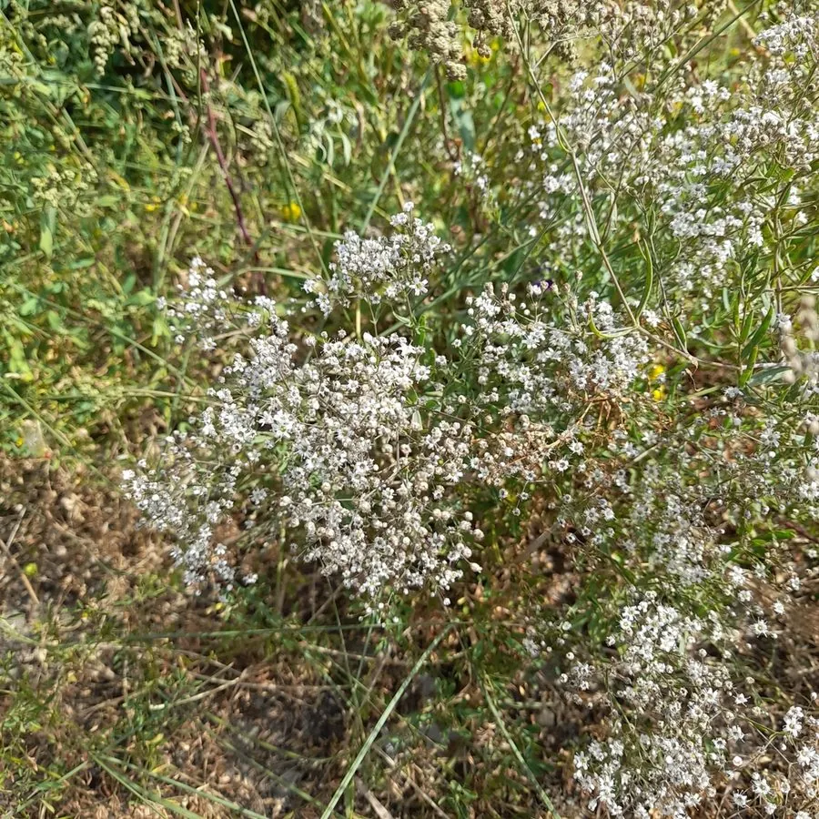

花卉与草本 · 植物界
满天星 Gypsophila paniculata

石竹科多年生草本，无数白色小花密集成团，轻盈如星，是花束与花篮中重要的配材，也用于干花制作。
- 分类
- 门被子植物门纲木兰纲目石竹目科石竹科属满天星属
- 栖息环境
- 欧亚草原与石灰质丘陵，喜凉爽干燥、阳光充足
- 地理分布
- 原产欧洲至中亚一带，中国新疆、内蒙古等地有野生分布
- 保护级别
- 暂无评估
物种志
满天星为石竹科满天星属多年生草本，株高 60–100 厘米，茎多分枝，全株被白粉而呈灰绿色。叶片披针形，对生。聚伞花序顶生，花极小，直径约 5 毫米，花瓣白色、5 枚，数不清的小花聚成蓬松的花团，花期 5–7 月，果期 6–8 月。
满天星原产欧亚大陆的草原和石灰质干旱地区，喜阳光充足、凉爽干燥和排水良好的环境，耐旱耐寒，怕积水和湿热。它的属名来自古希腊语，意为“喜爱石灰”，可见对钙质土壤的偏好。切花中常见的满天星多由温室栽培，花枝干燥后仍能保持形态和颜色，是制作干花和永生花的常用材料，也常与玫瑰、康乃馨搭配成大花束。
形态与习性
- 株高60–100 厘米，茎多分枝
- 花期5–7 月，单株花期约 1 个月
- 果期6–8 月，蒴果球形
- 光照喜光，光照不足易徒长
- 水分耐旱，忌积水
- 土壤石灰质沙壤土，喜钙、耐瘠薄
- 主要用途切花配材、干花、花束填充
趣味知识
- 满天星的学名 Gypsophila 意为“喜爱石灰”，源自其对钙质土壤的偏好。
- 单朵花直径只有约 5 毫米，一个花序却可包含上百朵小花。
- 花枝采下倒挂阴干后仍能保持形态，是制作干花的常用材料。
- 花语为“甘愿做配角的爱”，常与玫瑰、康乃馨搭配成大花束。